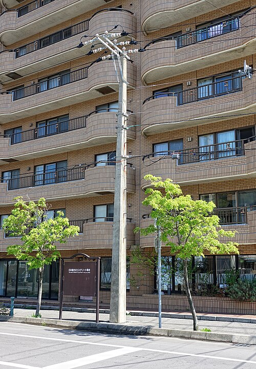
Réf. 01-01pièce · 12 m
Poteau électrique en béton
Poteau armé centrifugé avec traverse, pour réseau basse tension et éclairage public.
Encombrement 340 × 241 × 1202 cm
950 000 Ar
Tanàna · « la ville », « le village » en malgache
9 fournisseurs de la construction réunis dans un même magasin : gros œuvre, menuiserie, sanitaire, électricité, outillage, extérieur, voirie, toiture et peinture. À visiter en 3D, ou à parcourir ici.
Route d'Ivato, Antananarivo (au pied du rond-point) · ouvert du lundi au samedi de 8 h à 18 h, et le dimanche de 8 h à 12 h · devis par WhatsApp au 034 00 000 00 ou directement à chaque fournisseur.
Aucun article ne correspond à votre recherche. Essayez « ciment », « porte » ou « tôle ».
Fournisseur : Vato & Béton Fanorenana, Antananarivo, Ankorondrano, depuis 1998. Poteaux, colonnes, sable et agrégats livrés sur chantier. Camion-benne disponible en Analamanga.

Poteau armé centrifugé avec traverse, pour réseau basse tension et éclairage public.
Encombrement 340 × 241 × 1202 cm
950 000 Ar
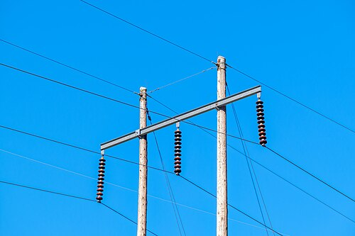
Eucalyptus traité à cœur contre les termites, pour lignes rurales et clôtures hautes.
Encombrement 340 × 107 × 1202 cm
420 000 Ar
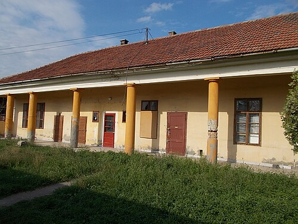
Colonne moulée à chapiteau, prête à peindre, pour varangues et galeries.
Encombrement 33 × 33 × 250 cm
380 000 Ar
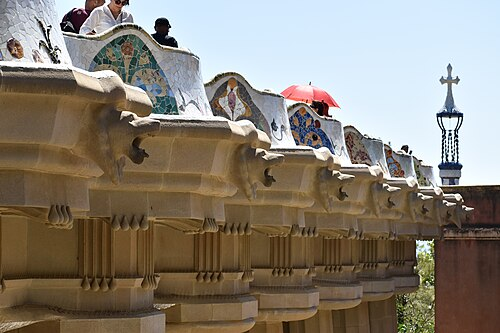
Pilier en béton blanc pour balcons et escaliers extérieurs.
Encombrement 30 × 24 × 93 cm
95 000 Ar
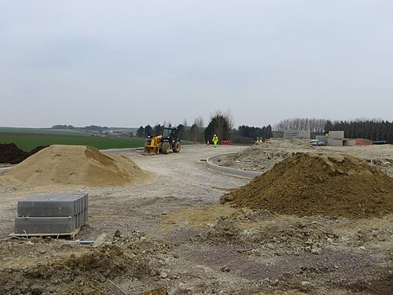
Sable lavé du Mangoro, calibré pour mortier et enduits. Livré en vrac.
Encombrement 95 × 98 × 16 cm
85 000 Ar
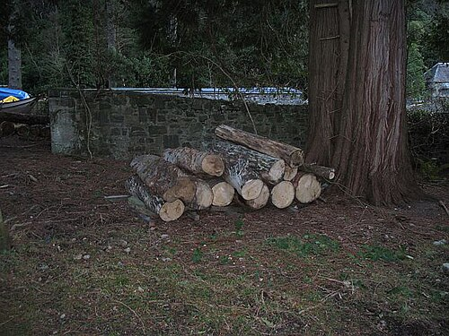
Rondins d'eucalyptus pour étais et coffrages de dalles.
Encombrement 40 × 70 × 32 cm
70 000 Ar
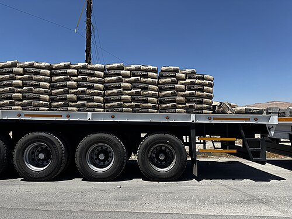
Ciment Portland composé pour dalles, poteaux et chapes. Vendu au sac ou à la palette de 40 sacs.
Encombrement 120 × 100 × 88 cm
32 000 Ar
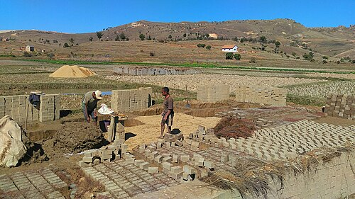
Briques de terre cuite des Hautes Terres, cuites au four. Environ 60 briques par m² de mur.
Encombrement 100 × 80 × 80 cm
350 Ar
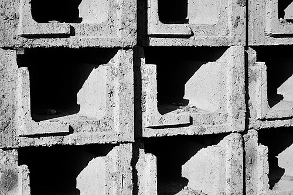
Blocs creux en béton vibré, pour murs porteurs et clôtures. 12,5 parpaings par m².
Encombrement 122 × 82 × 112 cm
2 800 Ar
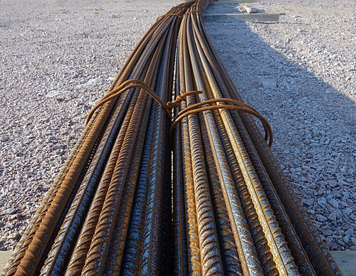
Acier haute adhérence pour dalles, chaînages et poteaux. Coupe et façonnage sur demande.
Encombrement 300 × 60 × 72 cm
32 000 Ar
Fournisseur : Rano Sanitaire, Toamasina, depuis 2011. Sanitaires, robinetterie et chauffe-eau. Installation et garantie sur les grandes villes.
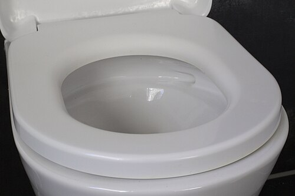
Cuvette suspendue sans bride, abattant frein de chute.
Encombrement 45 × 85 × 77 cm
420 000 Ar
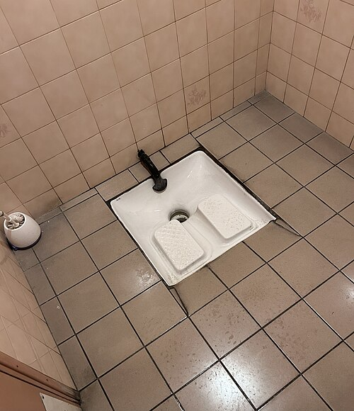
Receveur en grès émaillé, robuste et facile d'entretien.
Encombrement 45 × 71 × 69 cm
160 000 Ar
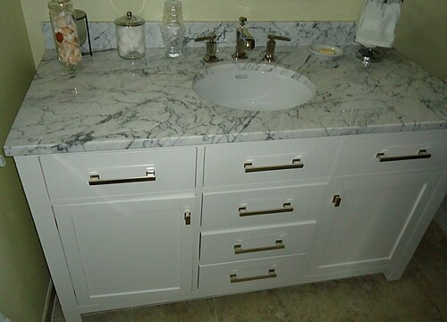
Plan double vasque, tiroirs à fermeture douce.
Encombrement 122 × 55 × 78 cm
950 000 Ar
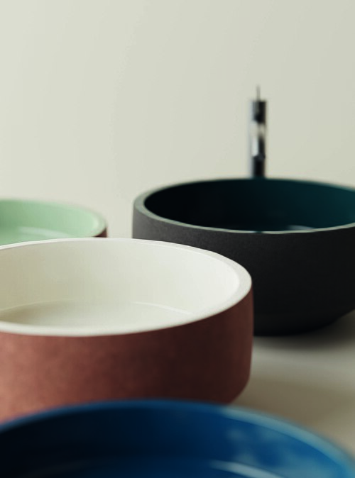
Taillée dans une pierre de l'Isalo, à poser sur plan.
Encombrement 54 × 46 × 37 cm
520 000 Ar
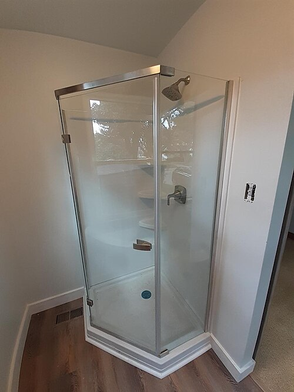
Parois en verre trempé, receveur extra-plat, colonne de douche.
Encombrement 90 × 90 × 199 cm
1 800 000 Ar
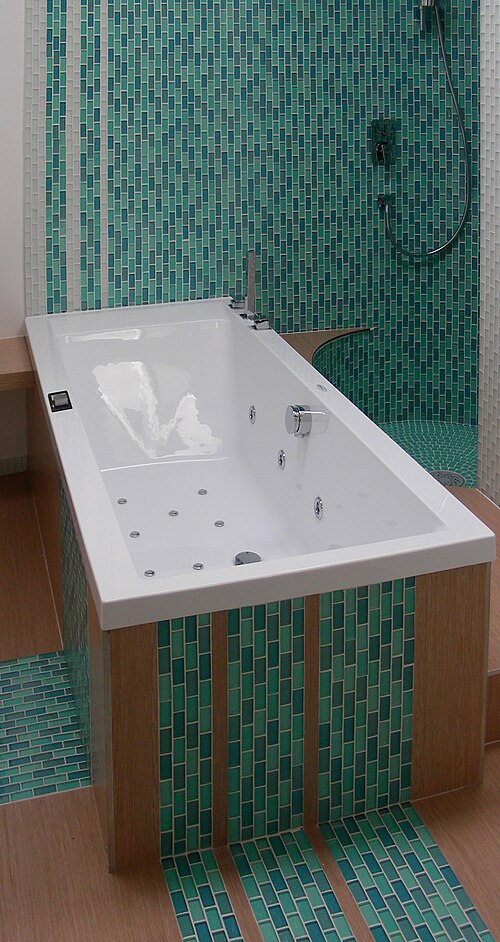
Acrylique renforcé, assise intégrée, tablier démontable.
Encombrement 160 × 160 × 80 cm
2 600 000 Ar
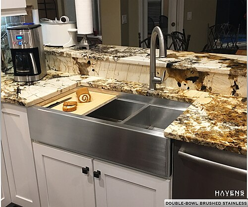
Évier inox un bac et égouttoir, mitigeur inclus.
Encombrement 98 × 62 × 98 cm
880 000 Ar
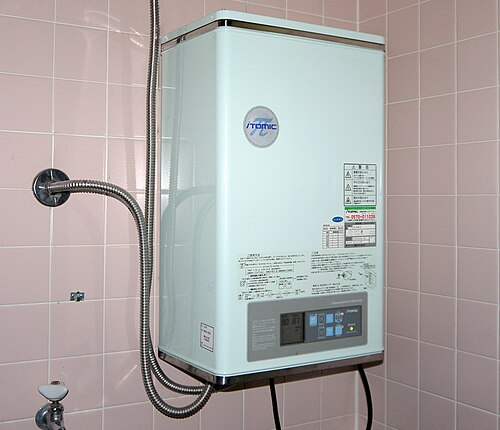
Cuve émaillée, thermostat réglable, groupe de sécurité fourni.
Encombrement 46 × 46 × 62 cm
780 000 Ar
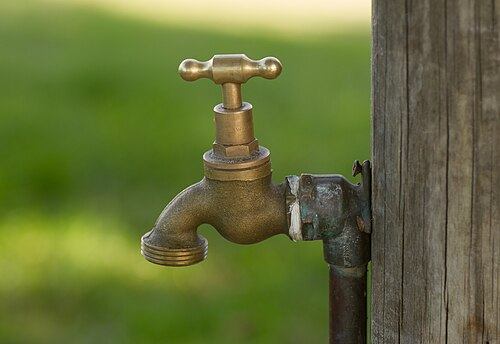
Laiton chromé, raccord tuyau rapide.
Encombrement 5 × 20 × 16 cm
35 000 Ar
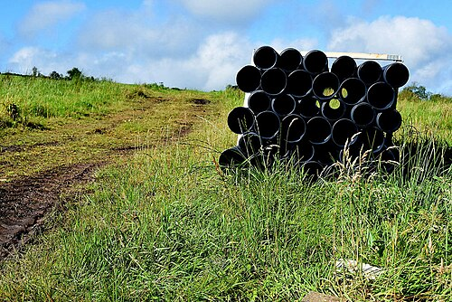
PVC rigide pour eaux usées et pluviales, raccords et colle disponibles.
Encombrement 300 × 60 × 62 cm
38 000 Ar
Fournisseur : Hazavana Électricité, Antsirabe, depuis 2014. Solaire, éclairage public et privé, climatisation. Étude d'installation gratuite.
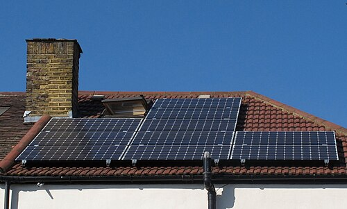
Monocristallin, cadre aluminium, support incliné. Idéal en site isolé.
Encombrement 67 × 107 × 107 cm
450 000 Ar
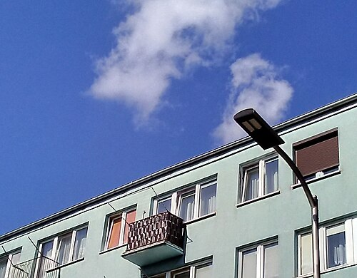
Mât acier galvanisé, tête LED 60 W, option solaire autonome.
Encombrement 34 × 245 × 770 cm
2 900 000 Ar
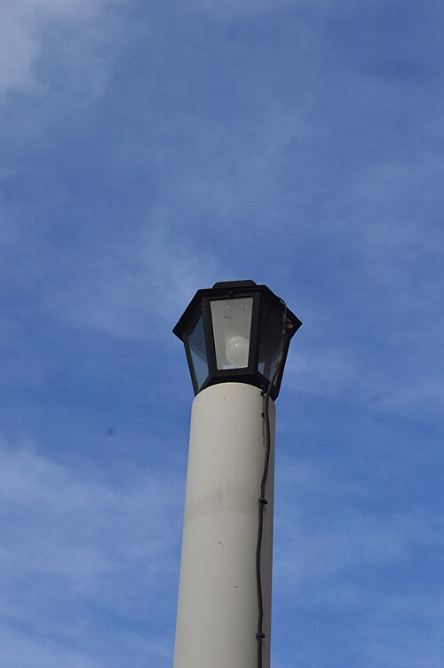
Fonte d'aluminium style ancien, pour allées et places.
Encombrement 30 × 30 × 250 cm
1 500 000 Ar
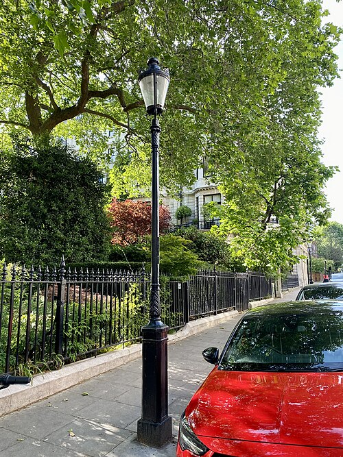
Éclairage d'ambiance pour parcs, cours et parkings.
Encombrement 61 × 56 × 300 cm
1 100 000 Ar
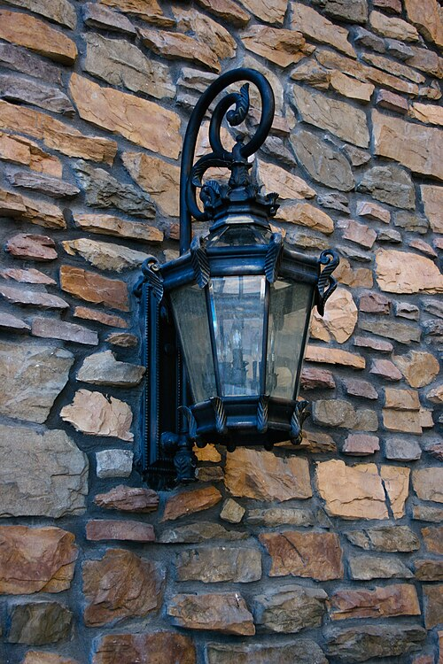
Applique extérieure étanche, verre dépoli.
Encombrement 18 × 17 × 32 cm
95 000 Ar
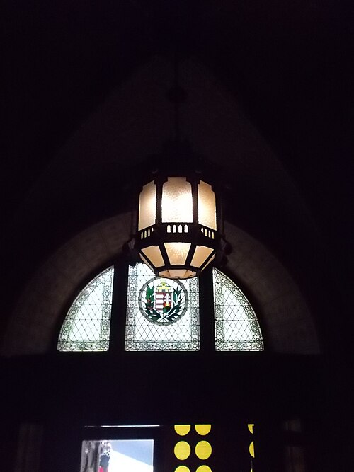
Applique en aluminium, détecteur de mouvement en option.
Encombrement 45 × 50 × 65 cm
75 000 Ar
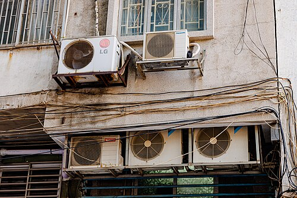
Inverter, gaz R32, pose et mise en service comprises.
Encombrement 77 × 28 × 54 cm
2 200 000 Ar
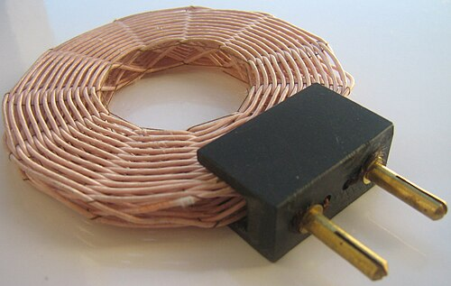
Fil rigide cuivre, rouge, bleu et vert-jaune, pour prises et circuits domestiques.
Encombrement 170 × 60 × 80 cm
210 000 Ar
Fournisseur : Fitaovana Quincaillerie, Antananarivo, Behoririka, depuis 1992. Outillage à main et électroportatif, échelles et établis. Location à la journée.
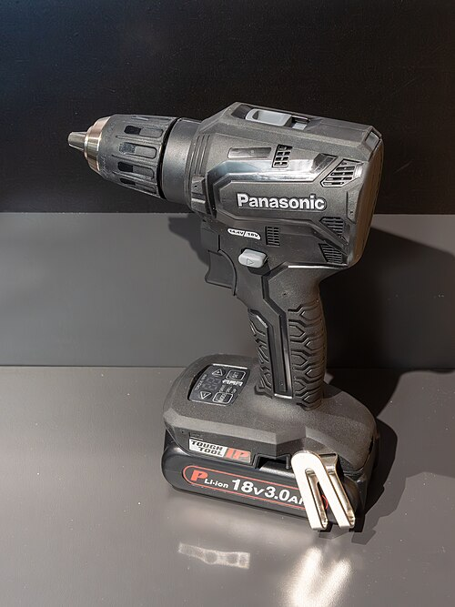
18 V, deux batteries, coffret de forets.
Encombrement 7 × 27 × 26 cm
280 000 Ar
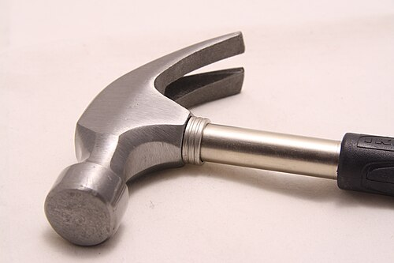
Tête forgée, manche en bois dur.
Encombrement 35 × 13 × 3 cm
28 000 Ar
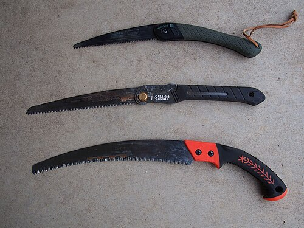
Lame trempée 550 mm, denture universelle.
Encombrement 62 × 17 × 2 cm
45 000 Ar
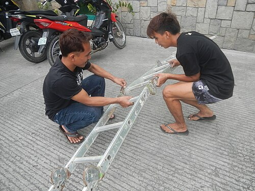
Sept marches, plateforme et tablette porte-outils.
Encombrement 58 × 76 × 180 cm
320 000 Ar
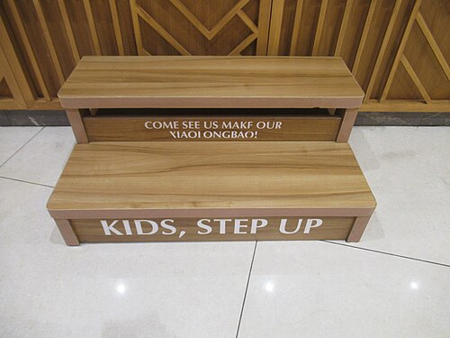
Trois marches, pin verni, pliant.
Encombrement 46 × 75 × 83 cm
140 000 Ar
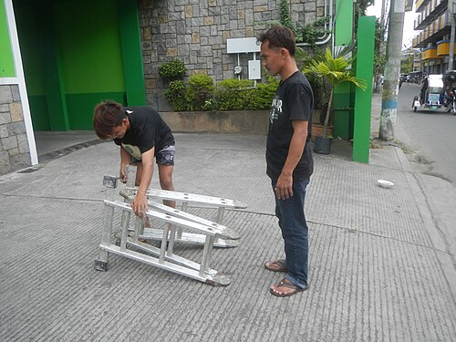
Montants aluminium, patins antidérapants.
Encombrement 56 × 87 × 283 cm
260 000 Ar
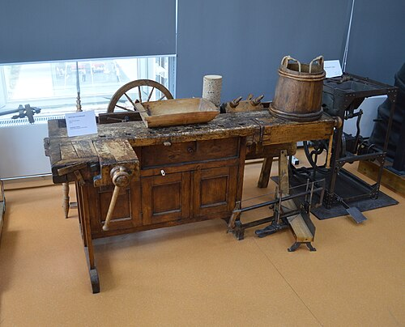
Plateau hêtre massif, étau, panneau porte-outils.
Encombrement 123 × 62 × 174 cm
900 000 Ar
Fournisseur : Zaridaina Clôtures & Jardins, Fianarantsoa, depuis 2009. Clôtures, portails, pergolas et haies vives. Pose et entretien des espaces verts.
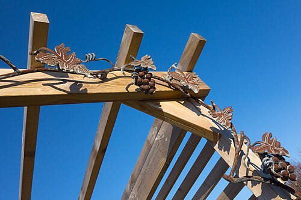
Poteaux et chevrons en bois traité, à habiller de végétation.
Encombrement 240 × 256 × 263 cm
3 200 000 Ar
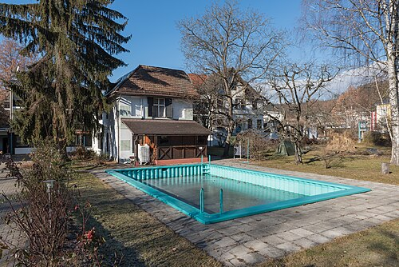
Bassin béton, liner, filtration. Étude et réalisation complètes.
Encombrement 500 × 276 × 140 cm
28 000 000 Ar
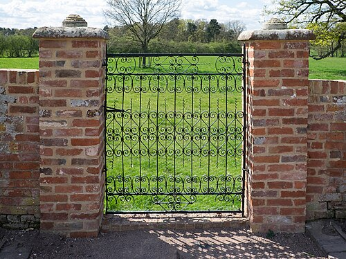
Ferronnerie d'art, antirouille et peinture époxy.
Encombrement 98 × 1 × 235 cm
1 900 000 Ar
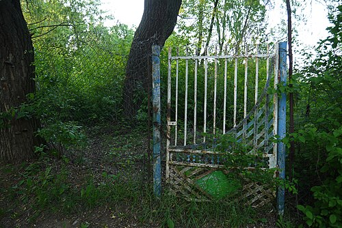
Cadre galvanisé et grillage soudé, serrure incluse.
Encombrement 85 × 5 × 110 cm
240 000 Ar
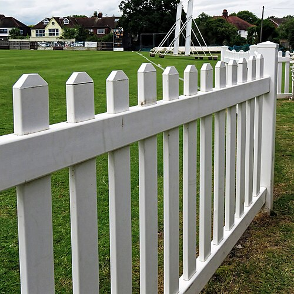
Lattes de pin peintes, pose sur poteaux bois.
Encombrement 85 × 6 × 125 cm
85 000 Ar
Planches jointives pour l'intimité des cours et jardins.
Encombrement 73 × 8 × 105 cm
160 000 Ar
Plants de haie locale, plantation et paillage compris.
Encombrement 151 × 105 × 106 cm
60 000 Ar
Béton lissé, pour cours, places et arrêts de bus.
Encombrement 142 × 60 × 73 cm
480 000 Ar
Acier peint, serrure et porte-étiquette.
Encombrement 31 × 30 × 30 cm
120 000 Ar
Fournisseur : Lalana Voirie & Signalisation, Mahajanga, depuis 2003. Enrobés, bordures, feux et mobilier urbain pour communes, quartiers et lotissements.
Enrobé, bordures, trottoirs et marquage. Devis au mètre linéaire.
Encombrement 1300 × 1045 × 18 cm
45 000 000 Ar
Benne 10 m³ avec chauffeur, pour terrassement et évacuation.
Encombrement 272 × 630 × 340 cm
650 000 Ar
Dalle béton balayé et bordure, pose comprise.
Encombrement 549 × 96 × 16 cm
1 200 000 Ar
Feu tricolore LED sur mât, contrôleur programmable.
Encombrement 38 × 53 × 317 cm
3 500 000 Ar
Feu piéton LED avec bouton d'appel.
Encombrement 53 × 53 × 300 cm
2 800 000 Ar
PVC souple, bandes rétroréfléchissantes.
Encombrement 38 × 38 × 70 cm
25 000 Ar
Polyéthylène, roues et couvercle, pour quartiers et marchés.
Encombrement 60 × 63 × 102 cm
180 000 Ar
Fournisseur : Tafo Toiture & Charpente, Antsirabe, depuis 2001. Tôles ondulées, faîtières et bois de charpente sciés en scierie. Découpe à la longueur sur demande.
Tôle acier galvanisé 0,35 mm. Environ 1,6 m² couvert par feuille, recouvrements compris.
Encombrement 200 × 94 × 42 cm
42 000 Ar
Faîtière assortie aux tôles ondulées, pour fermer le faîtage du toit.
Encombrement 180 × 44 × 40 cm
25 000 Ar
Pin des Hautes Terres raboté, 2,5 × 20 cm, pour coffrages, bardages et voliges.
Encombrement 300 × 72 × 56 cm
18 000 Ar
Eucalyptus scié et traité, pour charpentes et pannes de toiture.
Encombrement 300 × 56 × 52 cm
24 000 Ar
Fournisseur : Loko Peinture & Carrelage, Antananarivo, Andraharo, depuis 2012. Peintures acryliques teintées à la demande, carrelage et faïence. Conseil couleur gratuit.
Mate, lessivable, teintée à la demande parmi 400 couleurs. 10 m² par litre et par couche.
Encombrement 124 × 64 × 96 cm
120 000 Ar
Grès cérame façon terrazzo, le même que le sol du magasin. Boîtes de 1,44 m².
Encombrement 134 × 64 × 164 cm
65 000 Ar
Fournisseurs, prix et coordonnées d'exemple pour cette maquette. Prix indicatifs, confirmés par chaque fournisseur dans le devis. Les photos illustrent le type d'article ; elles ne montrent pas forcément le produit exact vendu.
Le grand magasin de la construction : neuf rayons, neuf fournisseurs, à visiter en 3D.
L'accent sur le premier a : la main des artisans, la vannerie, la soie, le bois. Visiter l'étal d'artisanat →
L'accent sur le deuxième a : ce qu'on bâtit ensemble. Ici, tout pour construire la maison, le village et la route, chez nos fournisseurs.
Connexion lente détectée : la visite 3D peut être longue à charger.
Voir le catalogue sans 3D →Fournisseurs, prix et coordonnées d'exemple pour cette maquette.